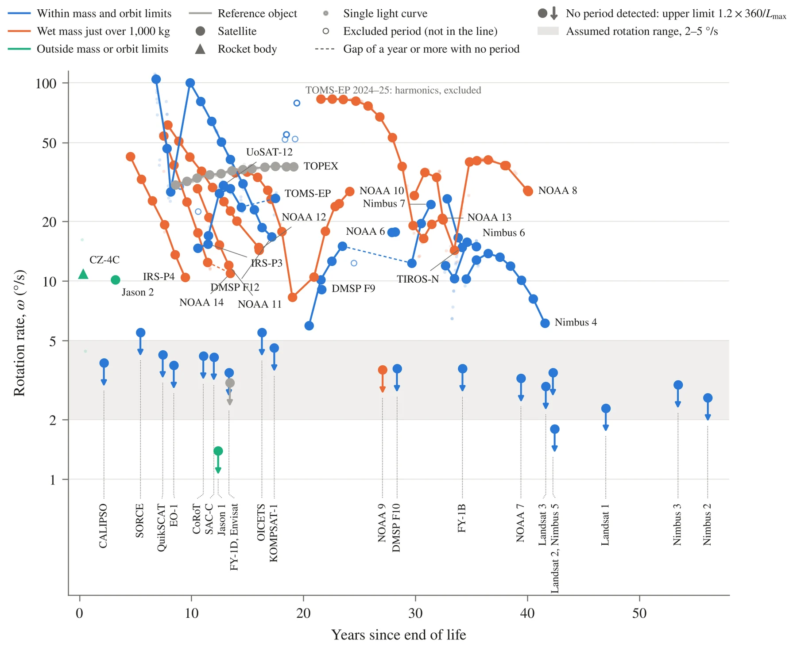
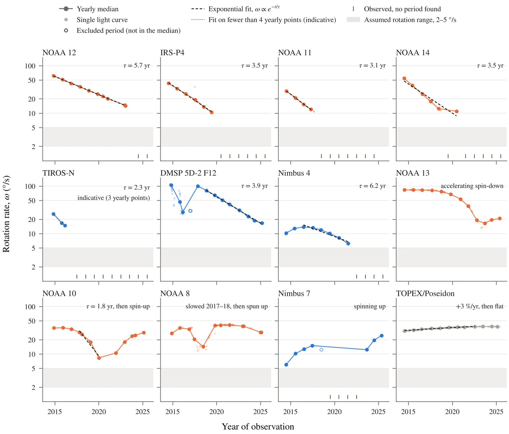
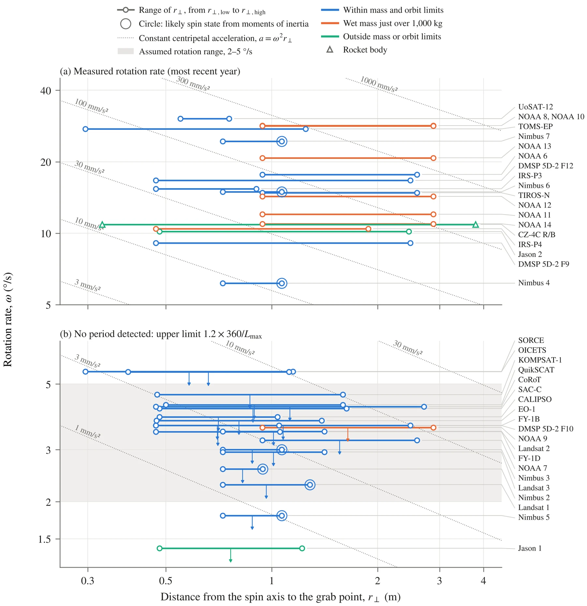
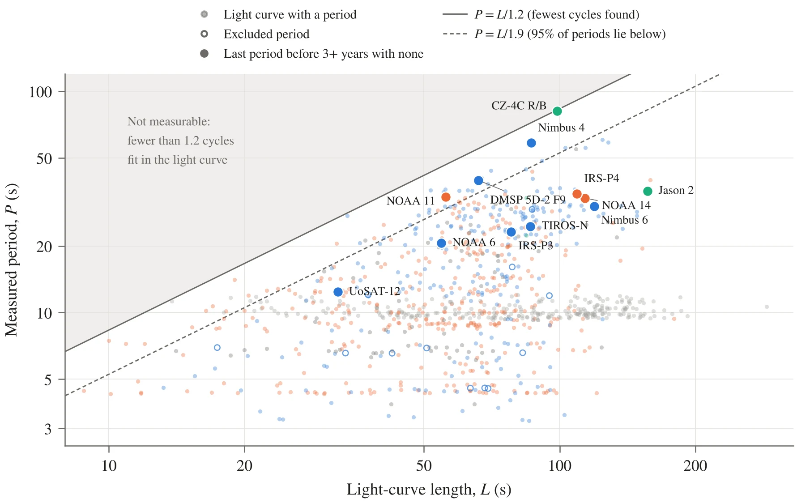
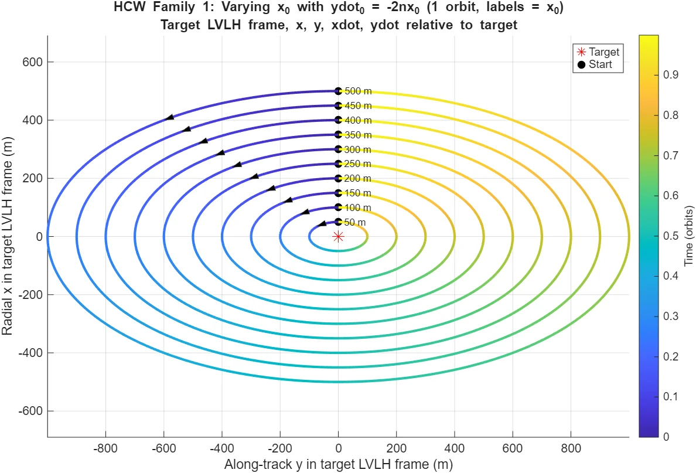
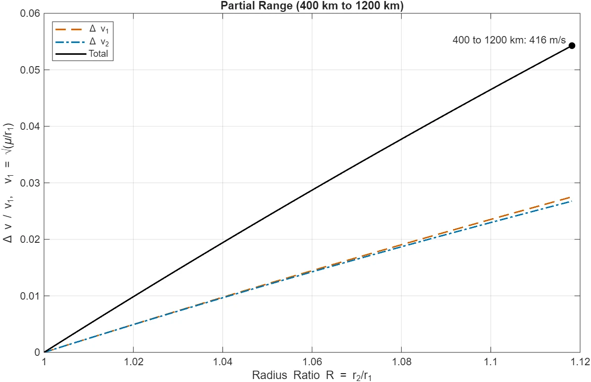

HARMONIA: unified docking and debris-capture architecture
A target dataset for debris capture: how fast defunct low-Earth-orbit satellites rotate, how that changes over the years, and how far their grapple points sit from the spin axis.
- Lab
- Space Systems Group (SSG), University of Florida
- Advisor
- Dr. Fitz-Coy
- Role
- Undergraduate researcher, supporting the lead researcher's PhD dissertation
- Period
- 2026
- Completed
- Tools
- Python, MATLAB

Overview
A servicer that docks with or captures a dead satellite has to match its rotation and reach a point it can hold. HARMONIA is a unified docking and debris-capture architecture studied in the Space Systems Group, and I built its target dataset: defunct satellites in low Earth orbit with their rotation rates, masses and grapple-point geometry. The work supports the lead researcher's PhD dissertation.
Approach
- Rotation rates. Retrieve light curves from the Mini-MegaTORTORA photometric archive with Python, fold each one at its candidate period, and compare the fold at half, one and two times that period to resolve factor-of-two ambiguities. Periods that do not fold cleanly are listed and excluded.
- Detection limit. A period only appears when at least about 1.2 rotations fit inside one light curve. For objects with no period, that gives an upper limit on rotation rate from the longest light curve.
- Grapple geometry. Estimate the distance from the spin axis to the capture point from satellite bus and adapter-ring dimensions, bracketed between spin about the long axis and the largest-ring case.
- Rendezvous. Hohmann-phasing ΔV and Clohessy–Wiltshire relative-motion families in MATLAB for far-field rendezvous and proximity operations.
Results
- Rotation rates determined for 44 defunct satellites. Those inactive for longer trend toward lower rates.
- Objects with a measurable period rotate at roughly 5 to 100 °/s, mostly above the 2 to 5 °/s range assumed for capture studies. Objects with no detectable period are bounded to slower rates.
- Of the 12 objects with several years of data, seven show a steady exponential spin-down with e-folding times of about 2 to 6 years. Others slow and then spin up again.
- Holding station beside a grapple point takes a centripetal acceleration of 8 to 708 mm/s² across the measured objects, which sets the thrust a servicer needs per kilogram.
- A Hohmann transfer across the study's altitude range, 400 km to 1,200 km, costs about 416 m/s.
Figures









